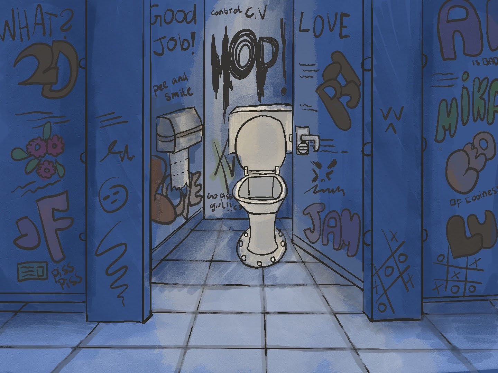
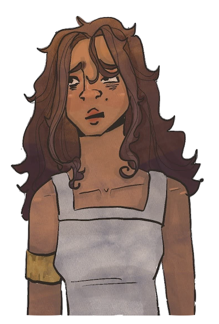
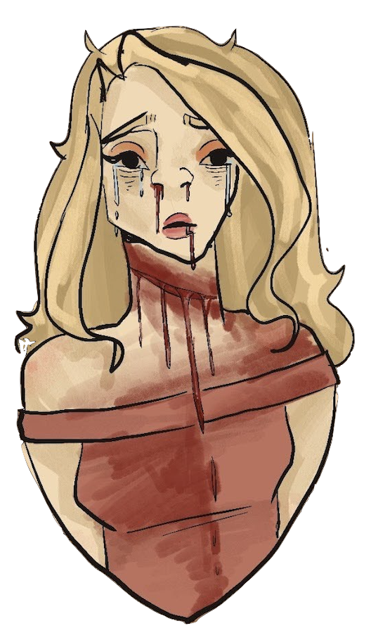
Fuuck man, hvor fuck er jeg.
Okay, vild aften, jeg er simpelthen vågnet på toilettet
Og klubben er endda allerede lukket
Hvor fanden er Sofie blevet af!!!
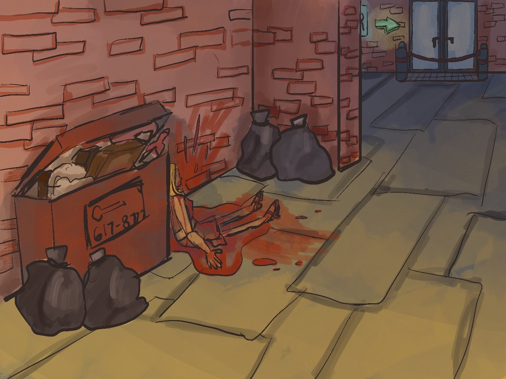
Har hun seriøst bare efterladt mig!!!!
Oh fuck, oh fuck, oh fuck, Sofie!!
Selvfølgelig bliver jeg da nødt til at tjekke op på hvad fanden der er sket
Jeg må se om jeg ikke kan stoppe blødningen!!
*Piv*
Sorry, sorry, sorry, undskyld hvis det gør ondt
*gasp… k–kh…* “kæmper for at få vejret”
Sofie, sofie, SOFIE!! du må ikke lukke øjnene nu, du bliver nødt til at holde dig vågn!
Nej, nej, nej. Fuck
"Sofie trækker ikke længere vejret"
Sorry Sofie... fuck, min dna er over alt på Sofie nu, hvad fuck skal jeg gøre
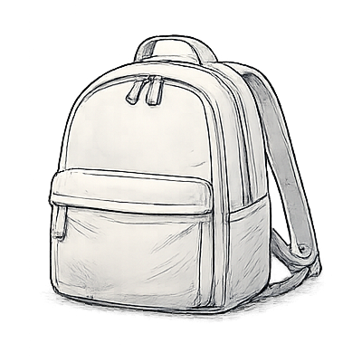
Gyden
Undersøg gyden
Hvad vil du gøre efter?
"Gyden er ikke lang, men den er mørk og beskidt, ikke et rart sted at dø, må man sige.
Du kigger dig om, men du finder ikke meget. Det du kan finde, skriver du ned i din telefon."
"Efter grundig undersøgelse, Sofie ligger ikke langt fra gydens indgang, men ingen har
tilsyneladende set hende. Du noterer også at der stadig er en del blod, mest under og på Sofie.
Hun kigger også kort ned i skraldespanden for at se om der ligger noget der, men øverst ligger
der i hvert fald intet."
Okay... Er der mon noget der tegner på hvad fanden der er sket?
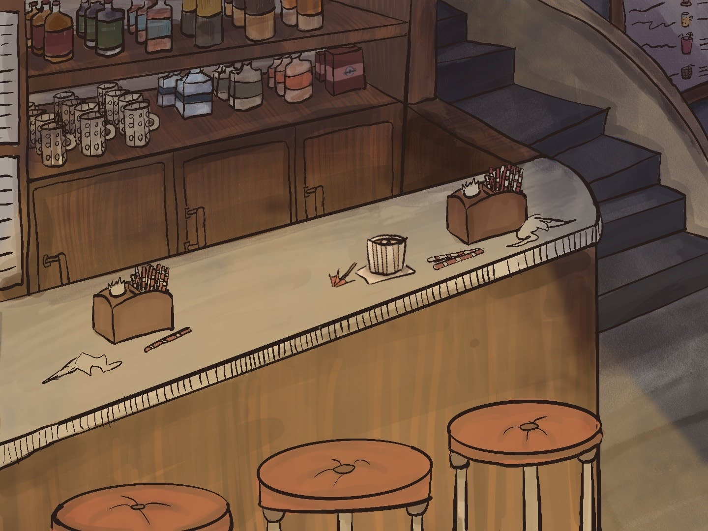
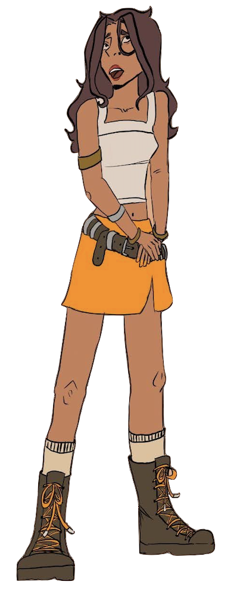
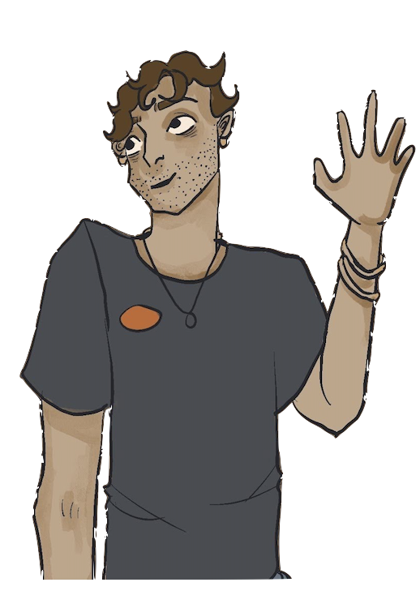
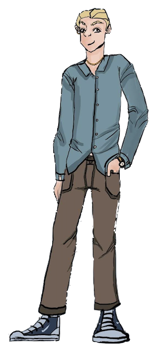
"Blodpletten fanger din interesse, du vælger at bevæge dig op til barens indgang, du trækker
vejret dybt ind og lukker alle alarmklokker, som går basalt inde i din krop. Du løfter dine
arme og… Med et barser Caroline igennem, hun var ikke engang sikker på, at nogle ville være
der, eller at døren ville være åben. Dog ser hun to mænd derinde."
"En mand pusser diverse glas bag baren, Caroline genkendte ham, hun har drukket her før med
Sofie. Det var bartenderen, dog kendte hun ikke hans navn. Den anden var… bekendt, der var
en klokke, der ringede, men hun kunne ikke lige pege fingeren på hvor fra. Han sad helt
ude i siden, alene ved et bord og drak et glas med… whisky?"
Det var da godt nok lidt tidligt allerede at sidde og drikke whiskey nu... Og hvorfor har
de allerede åbent?
Caroline ser nu at der er en trappe bagerst, som fører ovenpå hvor toiletterne ligger,
hun husker dog at der også er andre døre der oppe, men ved ikke hvad der er bag.
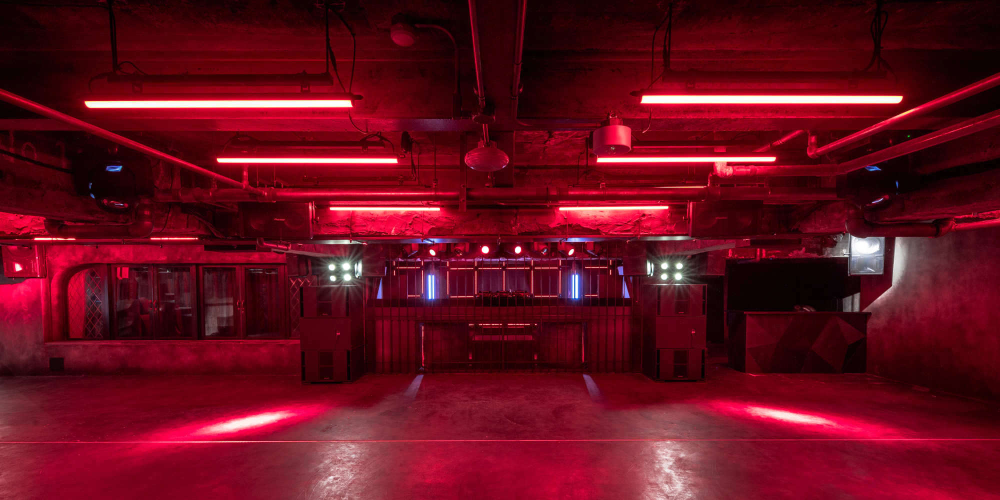
Okay, jeg går tilbage til klubben, der må da være nogle der har set et eller andet.
"Caroline bevæger sig tilbage til klubben, hun husker ikke meget, men hun er sikker på at
hende og Sofie må have været her inden hun døde. Caroline kommer ind er der er tydeligt
lukket. Den eneste som er derinde er dørmanden. Han sad på en stol og røg en smøg."
Altså ser han mig slet ikke, han sidder jo bare der og stener den.
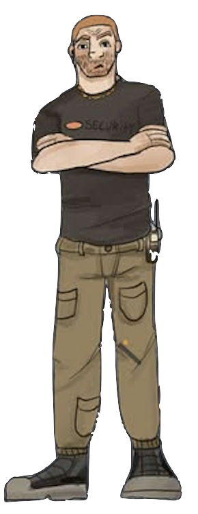
Okay, jeg går tilbage til klubben, der må da være nogle der har set et eller andet.
"Caroline bevæger sig tilbage til klubben, hun husker ikke meget, men hun er sikker på at
hende og Sofie må have været her inden hun døde. Caroline kommer ind er der er tydeligt
lukket. Den eneste som er derinde er dørmanden. Han sad på en stol og røg en smøg."
Altså ser han mig slet ikke, han sidder jo bare der og stener den.

"Caroline rykker sig over til “whisky manden” hun føler sig lidt nervøs, dog ved hun ikke
hvorfor, der er noget ved ham, som hun ikke bryder sig om."
Undskyld mig.
Jamen dog, det bare mit held at sådan en skøn pige som dig kommer op og snakker med mig,
hvordan kan jeg være til tjeneste denne gang?
"Caroline følte allerede noget krybe ind under hendes hud, hun kunne allerede føle
hans ‘fuckboy’ energi. Dog måtte hun fortsætte."
Denne gang? Vi har mødt før?
Hahahaha, du må ha’ drukket meget, så lad mig introducere mig selv igen. Mit navn
er Rune og jeg ejer denne bar, og den klub ved siden af, som jeg viste dig og din
søde veninde i aftes.
Har du set min ven før?
"Selvfølgelig, vi tog alle tre ned til min klub, hyggede os i lidt tid Jeg endte
selv med at rykke hen til mit VIP rum. Så jer ikke efter det.”
"Caroline rykker sig over til “whisky manden” hun føler sig lidt nervøs, dog ved hun ikke
hvorfor, der er noget ved ham, som hun ikke bryder sig om."
Undskyld mig.
Jamen dog, det bare mit held at sådan en skøn pige som dig kommer op og snakker med mig,
hvordan kan jeg være til tjeneste denne gang?
"Caroline følte allerede noget krybe ind under hendes hud, hun kunne allerede føle
hans ‘fuckboy’ energi. Dog måtte hun fortsætte."
Genkender du den her kniv?
Ja, det min... den blev taget fra mig, da jeg var sammen med dig i klubben.
"Caroline går roligt over til dørvagten, der endelig har lagt mærke til hendes eksistens,
med et intens blik og et puf røg i hendes retning. Han var stor, nærmest gigantisk.
Caroline stod nu og tænkte over hvor intimiderende momentet var, og hvor nemt han vil kunne
dræbe hende, hvis han ville."
Hvad vil du?
Jeg tænkte bare på om jeg kunne stille dig nogle spørgsmål, hvis det altså er okay?
Heldigvis for Caroline, nikkede dørmanden stille og roligt, med ret træt blik
bag hans øjne. Men hun valgte alligevel at tage muligheden og sætte dig overfor
ham ved bordet.
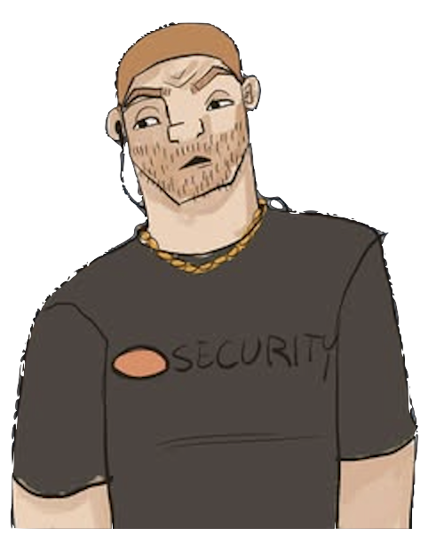
Genkender du den her pige?
Hmm, det gør jeg sikkert, hvis du spørg. Vent lige… ahh ja, jer kan jeg godt
huske, chefens nyeste fang.
Ohhh, øhmm, if you say so.... Så du hende gå ud af klubben i går aftens? og
muligvis hvem hun er gået med?
Jeg holder øje med hvem der kommer ind, ik dem der smutter, men hvis du ik kan
finde hende så er hun nok taget hjem.
......
Så du noget mistænkeligt mens du stod vagt?
Hvem tror du lige DU er? Politiet?... heh, selvfølgelig så jeg nogle mistænkelige i går.
Jeg en sikkerhedsvagt for en klub sveske.
Caroline fandt ham lidt frustrerende, nok fordi det har været en meget, MEGET, lang dag…
Hørte du om noget ballade der fandt sted i aftes?
Ahh, der altid nogen som skal lave ballade, og det mig det sender for at gøre rent.
Hvad skete der?
Tro det eller ej, men… der var nogen der troede de kunne stå på hænder,
midt på dansegulvet, da han ik ku væltede han ind en gruppe og var ved at
starte en kamp så-
Undskyld?!? Hørte du noget om et angreb, stoffer eller… nogen som
hentyd til at ville dræbe nogen?
Jeg har ingen kommentarer til hvad folk tager når de inde i
klubben, vi smider dem ud og vi bander dem.
Vagtens svar var nærmest robotisk denne gang, og han
kommenterede kun til det med stofferne.
"Blodpletten fanger din interesse, du vælger at bevæge dig op til barens indgang, du trækker
vejret dybt ind og lukker alle alarmklokker, som går basalt inde i din krop. Du løfter dine
arme og… Med et barser Caroline igennem, hun var ikke engang sikker på, at nogle ville være
der, eller at døren ville være åben. Dog ser hun to mænd derinde."
"En mand pusser diverse glas bag baren, Caroline genkendte ham, hun har drukket her før med
Sofie. Det var bartenderen, dog kendte hun ikke hans navn. Den anden var… bekendt, der var
en klokke, der ringede, men hun kunne ikke lige pege fingeren på hvor fra. Han sad helt
ude i siden, alene ved et bord og drak et glas med… whisky?"
Det var da godt nok lidt tidligt allerede at sidde og drikke whiskey nu... Og hvorfor har
de allerede åbent?
Caroline ser nu at der er en trappe bagerst, som fører ovenpå hvor toiletterne ligger,
hun husker dog at der også er andre døre der oppe, men ved ikke hvad der er bag.
"Caroline rykker sig over til “whisky manden” hun føler sig lidt nervøs, dog ved hun ikke
hvorfor, der er noget ved ham, som hun ikke bryder sig om."
Undskyld mig.
Jamen dog, det bare mit held at sådan en skøn pige som dig kommer op og snakker med mig,
hvordan kan jeg være til tjeneste denne gang?
"Caroline følte allerede noget krybe ind under hendes hud, hun kunne allerede føle
hans ‘fuckboy’ energi. Dog måtte hun fortsætte."
"Caroline rykker sig over til “whisky manden” hun føler sig lidt nervøs, dog ved hun ikke
hvorfor, der er noget ved ham, som hun ikke bryder sig om."
Undskyld mig.
Jamen dog, det bare mit held at sådan en skøn pige som dig kommer op og snakker med mig,
hvordan kan jeg være til tjeneste denne gang?
"Caroline følte allerede noget krybe ind under hendes hud, hun kunne allerede føle
hans ‘fuckboy’ energi. Dog måtte hun fortsætte."
Ad, ad, ad... okay, hvis jeg skal finde noget, så er det nok her.
Caroline åbner skraldespandene en efter en og roder rundt i gamle poser, klistret plastik
og alt muligt klamt, hun helst ikke vil tænke for meget over.
I bunden af den sidste skraldespand finder hun en blodig kniv med et meget fint design. Hvis
bare hun kunne finde ejeren.
"Caroline rykker sig over til “whisky manden” hun føler sig lidt nervøs, dog ved hun ikke
hvorfor, der er noget ved ham, som hun ikke bryder sig om."
Undskyld mig.
Jamen dog, det bare mit held at sådan en skøn pige som dig kommer op og snakker med mig,
hvordan kan jeg være til tjeneste denne gang?
"Caroline følte allerede noget krybe ind under hendes hud, hun kunne allerede føle
hans ‘fuckboy’ energi. Dog måtte hun fortsætte."
"Caroline rykker sig over til “whisky manden” hun føler sig lidt nervøs, dog ved hun ikke
hvorfor, der er noget ved ham, som hun ikke bryder sig om."
Undskyld mig.
Jamen dog, det bare mit held at sådan en skøn pige som dig kommer op og snakker med mig,
hvordan kan jeg være til tjeneste denne gang?
"Caroline følte allerede noget krybe ind under hendes hud, hun kunne allerede føle
hans ‘fuckboy’ energi. Dog måtte hun fortsætte."
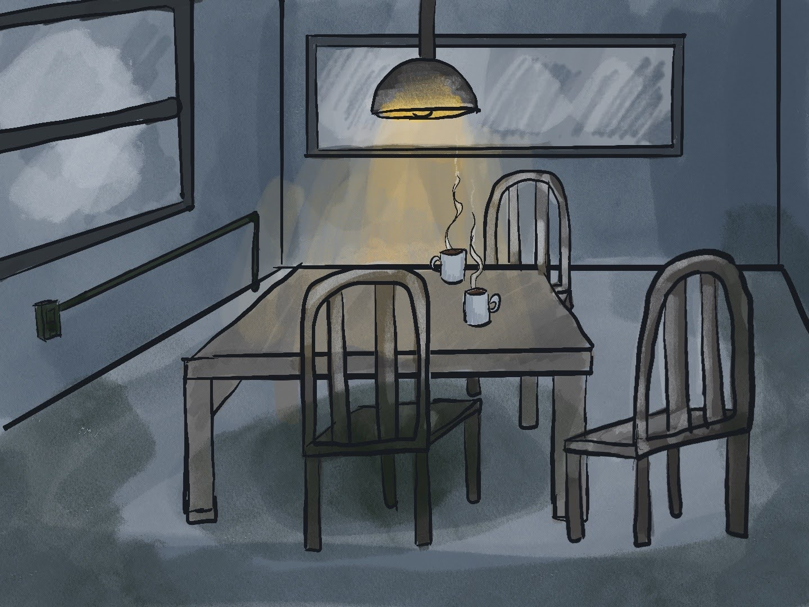

Caroline ringer til politiet. De dukker op ikke lang tid efter, de spærrer vejen, bruger
alle mulige gadgets og efter en uge kalder de Caroline ind for at snakke.
Caroline går ind i et rum med mørkegrå betonvægge. Hun sætter sig ved et bord og overfor
hende sætter sig en politimand. Politimanden har et intenst blik. Han stirrer bare på
Caroline i et minut.
Vil du have et glas vand inden vi starter?
huh? Øhh nej, nej tak
Ok, mit navn er Michael, det er mig der undersøger Sofies tragiske mord.
Har I fundet den der gjorde det?
Nej. Caroline, du siger at du vågnede op på toilettet af natklubben Unison og gik direkte
derfra ud for at finde Sofie med hendes hals allerede skåret næsten døende. Er det korrekt?
Øhh, ja, ja det rigtigt øhm... Jeg så hende og vidste ikke, hvad jeg skulle gøre, men der var
intet jeg kunne gøre...
Branch 1
Afhøring
Michael læner sig frem over bordet. Hvad spørger han ind til?
Af hvad vi kan følge, så ligner det at du og Sofie drak sammen på en bar, derefter tog i hen
til en klub sammen med en anden. Kan du huske, hvem det var?
Nej... jeg ved ikke, hvem det er. Det ikke nogen, vi kender, tror jeg.
Interessant.
Af hvad vi kan følge, så ligner det at du og Sofie drak sammen på en bar, derefter tog i hen
til en klub sammen med en anden. Kan du huske, hvem det var?
Rune ja, han kom op og talte med Sofie og jeg, han flirtede med Sofie, men hun var ikke
interesseret.
Men i følte ham stadig ind i klubben?
Han var sygt insisterende, og han ejede både baren og klubben, så vi blev lidt nysgerrige.
Men Sofie er ik den type, hun var slet ikke interesseret i ham på den måde.
Vi fandt mordvåbnet, det lå ikke langt fra kroppen, genkender du denne kniv?
Nej, jeg har aldrig set den før.
Aldrig set den før, men du har rørt den før?
Hvad? Vent, vent, vent.
Vent? På hvad? Vi har kigget den her kniv op og ned, og der er kun to set fingeraftryk,
knivens ejer og dine. Kan du forklare hvordan du aldrig har set kniven, men det er dine
fingeraftryk der sidder på dem?
...
Jeg har fået af vide at du fandt, hvad du tror er mordvåbnet, er det sandt?
Ja. Jeg fandt en kniv i en skraldespand, ikke langt fra Sofies krop og tog et billede af den.
Men på det tidspunkt havde du valgt IKKE at ringe til politiet endnu?
Det er måske svært at forstå, men jeg kunne ikke risikere at morderen kom væk. Sofie døde lige
foran mine øjne, jeg var ikke sikker selv, hvis morderen valgte at komme tilbage. Jeg... det
føltes også som om at jeg var nødt til at gøre det, og det var godt jeg gjorde det. Knivens
ejer var Rune.
Vi prøvede at finde den kniv du snakker om, men vi kunne ikke finde den nogen steder, nogen må
have taget den senere.
Du bragte selv mordvåbnet ind?
Ja. Jeg fandt en kniv i en skraldespand, ikke langt fra Sofies krop og tog den med mig, så
morderen ikke kunne komme tilbage efter den.
Beviser, der nu er godt kontamineret. Vi prøvede at teste den for fingerprint, men vi fandt
kun ejerens og dine, så vi har ingen sikre beviser.
HVAI... oh o-ok...
Ud over alkohol, var der nogle andre... substanser til stede den aften? Altså nogle former
for stoffer? Kokain, amfetamin, MDMA eller lign.
Nej, Sofie og jeg, vi kunne aldrig finde på det.
Jeg finder det meget sjovt du siger det, vi fandt indtagelse af alkohol tydeligt i Sofies
krop, men ellers intet. Dog de test vi foretog på dig kom tilbage med en positiv respons på
hallucinogen, men du kunne aldrig finde på det, siger du?
Noget fortalte Caroline, at det ikke var et seriøst spørgsmål.
Ud over alkohol, var der nogle andre... substanser til stede den aften? Cigaretter, snus...
andre stoffer.
Jeg er ikke sikker, men jeg fik lov til at kigge oppe på kontoret i baren, og fandt nogle
forskellige stoffer. Sofie og jeg kunne aldrig finde på faktisk selv at tage stoffer, men
hvis nogen sneg os noget.
Vi kunne ikke finde nogen beviser på at Sofie havde indtaget nogle stoffer. Din test,
tilgængelig, kom tilbage positiv for et hallucinogen. Vi kunne dog ikke finde ud af hvilket,
men hvis du siger at forskellige stoffer blev delt i disse to virksomheder.
Efter Carolines afgørelse blev hun separeret fra hendes hjem i noget tid, og det tog ikke
længe før hun forstod at hun var mistænkte nummer et. Efter nogle uger fandt hendes retssag
endelig sted.
Hvem der dræbte Sofie, hvorfor og hvor de er nu? Alt sammen ligegyldigt, for Caroline var
ved at tage faldet for det hele.
Caroline fik en skyldig dom. Caroline skulle leve 12 år i spjældet. I fængsel måtte Caroline
bruge lang tid alene med sine egne tanker og frygten om at hendes liv stadig kunne være ovre
når hendes dom var ovre.
Caroline blev forhørt flere gange, igen og igen, men politiet kunne ikke finde en morder.
Caroline var heldig at undgå at være den der fik skylden.
Tilgængelig kunne Caroline ikke leve med at, hvem end der dræbte Sofie, stadig kunne slippe
væk. Hun kunne ikke lade vær med at tænke hvad overså jeg, men hun kunne aldrig finde ud af
hvad.
Et navn dukkede op flere gange i løbet af politiets efterforskning. Rune. Men der var bare
ikke nogle solide beviser som politiet kunne bruge. Timer bliver til dage, dage til uger, uger
til måneder og måneder til år.
Jeg får af vide at du allerede har en ide om, hvad der skete den aften.
... ja, lad mig fortælle dig, om Sofies mord.
Caroline fortalte om baren, Rune, VIP-rummet, stoffet og kameraoptagelserne. Hun indrømmede
at hun ikke var sikker på hver eneste detalje, men hun vidste at Rune var den skyldige og hun
ville sige hvad end det tog for at få ham i fængsel.
Det tager tid, med Runes store mængde penge kan han tåle et solidt forsvar, men takket være
Carolines vidnesbyrd bliver Rune dømt. Mordet og den store mængde stoffer som Rune ejede
lander ham i en solid 20 år i fængsel.
Caroline kunne trække vejret og sørge ordentligt. Ingen byrder, intet at fortryde... eller
måske noget at fortryde. Når Caroline så ned på sine egne hænder, kunne hun stadig kun se
Sofies blod. Hun vidste bare en ting: aldrig igen.
"Caroline går hen til bartenderen, mens han står og pudser glassene, højst sandsynligt
fra i går aftens tænker hun. Hun husker at han normalt elsker at gå og lave tricks med
flaskerne om aftenen for at charmere damerne, hun var normalt også selv rimelig opmærksom
på ham når han var i gang. Men det var ikke det hun kom for denne gang"
Undskyld, må jeg spørger dig om noget?
Hvad så?

Så du min ven Sofie i løbet af i går aftes?
I var begge herinde, men i gik også sammen, derefter kom ingen af jer ind igen.
Jeg kan ikke huske ret meget fra i går aftes... Så du muligvis hvad tid vi gik?
Jeg mener det var samme tid som Rune… omkring en midnatstid måske.
"Caroline bliver lidt undren over svaret. "Midnat... der må have været
sket noget ind i mellem midnat og i morges" tænkte Caroline.
Hvorfor har i stadig åbent?
Bartenderen tager en dyb vejrtrækning og kigger mod "whiskey manden" og siger ikke andet.
Caroline kan tydeligt mærke at det ikke er en førstegangs ting, at han har siddet der så
tidligt om morgenen.
Så du min ven Sofie i løbet af i går aftes?
I var begge herinde, men i gik også sammen, derefter kom ingen af jer ind igen.
Jeg kan ikke huske ret meget fra i går aftes... Så du muligvis hvad tid vi gik?
Jeg mener det var samme tid som Rune… omkring en midnatstid måske.
"Caroline bliver lidt undren over svaret. "Midnat... der må have været
sket noget ind i mellem midnat og i morges" tænkte Caroline.
Så du min ven Sofie i løbet af i går aftes?
I var begge herinde, men i gik også sammen, derefter kom ingen af jer ind igen.
Jeg kan ikke huske ret meget fra i går aftes... Så du muligvis hvad tid vi gik?
Jeg mener det var samme tid som Rune… omkring en midnatstid måske.
"Caroline bliver lidt undren over svaret. "Midnat... der må have været
sket noget ind i mellem midnat og i morges" tænkte Caroline.
Debug
Live state
Current scene: none
{}
Narrator
The example story is loading.